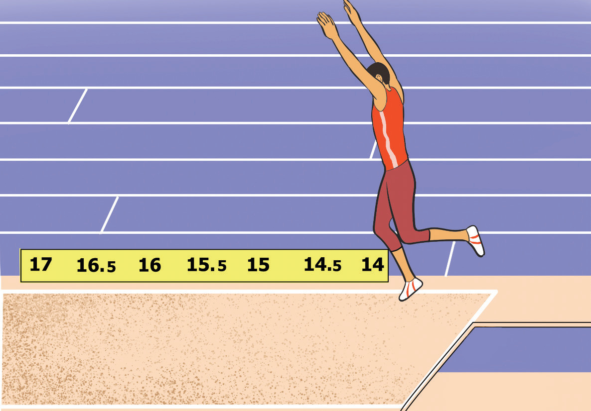

and smooth landing. While on the flight, the athlete can adopt the stride, hang, or hitch-kick jumping styles. Follow these steps to execute the flight effectively:
(i)
Fully extend both legs forward as you jump;
(ii)
Raise your arms high above your head, allowing them to swing downward before landing in the sandpit;
(iii)
Maintain a low take-off angle; and
(iv)
Keep your trunk upright to support the upward movement of your legs, Figure 2.31.

Landing
Landing in the triple jump is crucial for maximising the distance and ensuring a smooth finish. Follow these steps to execute an effective landing:
(i)
Swing your arms downward and backward to aid an upward movement;
(ii)
Then keep your arms in a forward position until the landing is complete, Figure 2.32;
(iii)
Bend your knees slightly to absorb the impact of landing; and
(iv)
Keep your body leaning forward slightly throughout the landing.